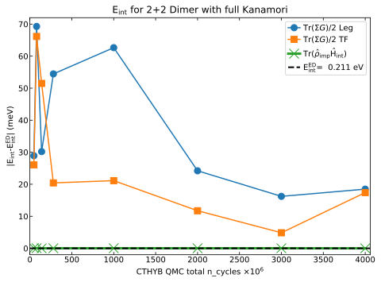

Measuring static observables¶
In addition to the interacting Green’s functions one is often interested in such observables, as orbital occupation numbers and double occupancy of the impurity. Expectation values of these time-independent operators are readily expressed in terms of the reduced many-body density matrix of the system,
Here, \(e^{-\beta\hat H}/Z\) is the density matrix of the full system (impurity + bath) described by the Hamiltonian \(\hat H\), and the Tr operator runs only over the bath degrees. Knowledge of \(\hat{\rho}_\mathrm{imp}\) allows to compute the thermodynamic expectation value of any time independent operator \(\hat{O}\) acting on the impurity degrees of freedom (wikipedia: density matrix):
The ctyhb solver allows to measure the impurity density matrix in the many-body basis, with only little additional calculational cost, and thus gives access to the multiplet structure of the impurity problem.
Measuring \(\hat{\rho}_\mathrm{imp}\) in cthyb¶
Let us consider a single-orbital Anderson impurity problem in a weak external magnetic field (script: static.py).
At first, we import all necessary modules, define some input parameters and construct a ctyhb Solver object in the usual way:
[4]:
from h5 import HDFArchive
from triqs.gf.descriptors import Fourier
from triqs.gf import Gf, MeshImFreq, iOmega_n, inverse, GfImTime, BlockGf, Wilson
from triqs.operators import c, c_dag, n
# plotting interface
from triqs.plot.mpl_interface import plt,oplot
# redirect ctyhb c++ output to notebook
from triqs.utility.redirect import start_redirect
start_redirect()
from triqs_cthyb.solver import Solver
Starting run with 1 MPI rank(s) at : 2019-11-25 22:04:14.037607
[5]:
# Parameters
D = 1.0 # Half-bandwidth of the bath
V = 0.2 # Hybridisation amplitude
U = 4.0 # Coulomb interaction
e_f = -U/2 # Local energy level
h = 0.01 # External field
beta = 50 # Inverse temperature
# Construct the impurity solver with the inverse temperature
# and the structure of the Green's functions
S = Solver(beta = beta, gf_struct = [ ('up',[0]), ('down',[0]) ])
# Initialize the non-interacting Green's function S.G0_iw
# External magnetic field introduces Zeeman energy splitting between
# different spin components
S.G0_iw['up'] << inverse(iOmega_n - e_f + h/2 - V**2 * Wilson(D))
S.G0_iw['down'] << inverse(iOmega_n - e_f - h/2 - V**2 * Wilson(D))
# setting up a local interaction Hamiltonian
h_int = U * n('up',0) * n('down',0)
Next, we instruct the solve function to accumulate the density matrix by passing the solver parameters measure_density_matrix = True and use_norm_as_weight = True. The latter parameter tells the solver to employ a reweighting scheme, using a spherical norm instead of the trace to calculate the atomic weight. This reweighting allows to take into account important contributions to \(\hat\rho_\mathrm{imp}\), which otherwise would be missed. See also cthyb solver
parameters for more information.
Now we run the solver:
[6]:
# Run the solver
S.solve(h_int = h_int, # interaction Hamiltonian
n_cycles = 500000, # Number of QMC cycles
length_cycle = 200, # Length of one cycle
n_warmup_cycles = 10000, # Warmup cycles
measure_density_matrix = True, # Measure the reduced density matrix
use_norm_as_weight = True) # Required to measure the density matrix
╔╦╗╦═╗╦╔═╗ ╔═╗ ┌─┐┌┬┐┬ ┬┬ ┬┌┐
║ ╠╦╝║║═╬╗╚═╗ │ │ ├─┤└┬┘├┴┐
╩ ╩╚═╩╚═╝╚╚═╝ └─┘ ┴ ┴ ┴ ┴ └─┘
The local Hamiltonian of the problem:
-1.995*c_dag('down',0)*c('down',0) + -2.005*c_dag('up',0)*c('up',0) + 4*c_dag('down',0)*c_dag('up',0)*c('up',0)*c('down',0)
Using autopartition algorithm to partition the local Hilbert space
Found 4 subspaces.
Warming up ...
22:04:14 10% ETA 00:00:00 cycle 1055 of 10000
Accumulating ...
22:04:15 0% ETA 00:00:46 cycle 1063 of 500000
22:04:17 4% ETA 00:00:43 cycle 23190 of 500000
22:04:20 10% ETA 00:00:41 cycle 50917 of 500000
22:04:23 17% ETA 00:00:37 cycle 85400 of 500000
22:04:27 25% ETA 00:00:34 cycle 128456 of 500000
22:04:32 36% ETA 00:00:29 cycle 182170 of 500000
22:04:38 49% ETA 00:00:22 cycle 249867 of 500000
22:04:46 66% ETA 00:00:15 cycle 334334 of 500000
22:04:55 87% ETA 00:00:05 cycle 439976 of 500000
[Rank 0] Collect results: Waiting for all mpi-threads to finish accumulating...
[Rank 0] Timings for all measures:
Measure | seconds
Average sign | 0.0164616
Density Matrix for local static observable | 0.361092
G_tau measure | 0.0531679
Total measure time | 0.430722
[Rank 0] Acceptance rate for all moves:
Move set Insert two operators: 0.0460374
Move Insert Delta_up: 0.0460443
Move Insert Delta_down: 0.0460304
Move set Remove two operators: 0.0460288
Move Remove Delta_up: 0.0460209
Move Remove Delta_down: 0.0460368
Move Shift one operator: 0.032573
[Rank 0] Warmup lasted: 0.914752 seconds [00:00:00]
[Rank 0] Simulation lasted: 45.8245 seconds [00:00:45]
[Rank 0] Number of measures: 500000
Total number of measures: 500000
Average sign: 1
The results of the density matrix accumulation are accessible via the density_matrix attribute of the solver:
[7]:
# Extract accumulated density matrix
rho = S.density_matrix
Compute expactation values of static observables¶
Now we can use the function trace_rho_op() from triqs.atom_diag (see doc) to compute expectation values \(\langle\hat O\rangle = \mathrm{Tr}_\mathrm{imp}[\hat\rho_\mathrm{imp} \hat O]\) of any time independent operator.
To do so, information about the structure of the local Hilbert space is also needed. This information is stored as a special object in h_loc_diagonalization:
[8]:
# Object containing eigensystem of the local Hamiltonian
h_loc_diag = S.h_loc_diagonalization
This allows now to compute for example the expectation values of the impurity occupations, or the double occupancy:
[9]:
from triqs.atom_diag import trace_rho_op
# Evaluate impurity occupations
print("<N_up> =", trace_rho_op(rho, n('up',0), h_loc_diag))
print("<N_down> = ", trace_rho_op(rho, n('down',0), h_loc_diag))
# Evaluate double occupancy
print("<N_up*N_down> =", trace_rho_op(rho, n('up',0)*n('down',0), h_loc_diag))
<N_up> = 0.620367909784
<N_down> = 0.379668700586
<N_up*N_down> = 0.00358171472283
Evaluation of the impurity interaction energy¶
The function trace_rho_op() can also be used to evaluate the interaction energy of the impurity by computing the expectation value of \(\hat{H}_\mathrm{int}\):
[10]:
Eint = trace_rho_op(rho, h_int, h_loc_diag)
print("E_int=<H_int>=", '{:5.4f}'.format(Eint))
E_int=<H_int>= 0.0143
This provides a powerful way to calculate the impurity interaction energy, which is for example needed for calculating the total energy in a combined DFT+DMFT calculation.
In comparison to the widely used Galitski-Migdal Formula: \(\frac{1}{2} Tr [ \Sigma G]\) (Ref: Galitski & Migdal paper), using \(\mathrm{Tr}_\mathrm{imp}[ \hat\rho_\mathrm{imp} \hat{H}_\mathrm{int}]\) has the advantage that the self-energy \(\Sigma\) is not needed for calculating the interaction energy, which can be very noisy, especially for large \(i \omega_n\). Especially, the influence of the high-frequency tail of
the real part of the self-energy \(Re \Sigma (i \omega_n \rightarrow \infty)\), the so-called Hartree shift, critically determines the value calculated in the Galitski-Migdal formula. Therefore, calculating the interaction energy with trace_rho_op() provides a significantly more stable procedure when using a QMC based solver.
To test and benchmark this feature of the cthyb solver, we performed calculations for a Dimer coupled to two discrete bath states, including a full Kanamori interaction Hamiltonian. See triqs benchmark Dimer for more information. We first used the pyED exact diagonalization benchmark to compute the exact interaction energy of the impurity. Next, we compared these results
with interaction energies obtained from trace_rho_op(), and the Galitski-Migdal formula using the cthyb solver. We performed either a tail-fit, or used sampling directly in the Legendre basis to obtain smooth high-frequency behavior of \(\Sigma (i \omega_n)\).
The results are depicted below:

The black dashed horizontal line represents the interaction energy calculated with the exact diagonalization solver. The green crosses show the interaction energy computed with cthyb using trace_rho_op() for an increasing number of total QMC cycles (n_cycles*mpi.size). The error in the interaction energy is smaller than 1 meV compared to the ED result in this system, even for only \(48 \times 10^6\) QMC cycles. In comparison, the interaction energy obtained from the Galitski-Migdal
formula using Legendre sampling (blue circles), or using a tail-fitting procedure (orange squares), show errors as large as 70 meV. Even for incredible large numbers of QMC cylces (\(4 \times 10^9\)), the error is still as large as \(\approx 10\) meV. Even though, the high-frequency tail of \(\Sigma(i \omega_n)\) looks very smooth for this large number of QMC cycles, \(Re \Sigma (i \omega_n \rightarrow \infty)\) has not exactly the same value as the \(\Sigma\) calculated with
the ED solver, resulting directly in an error in the interaction energy. Hence, we highly recommend to calculate the interaction energy via trace_rho_op(), which converges very fast and reliably with increasing number of QMC cycles.